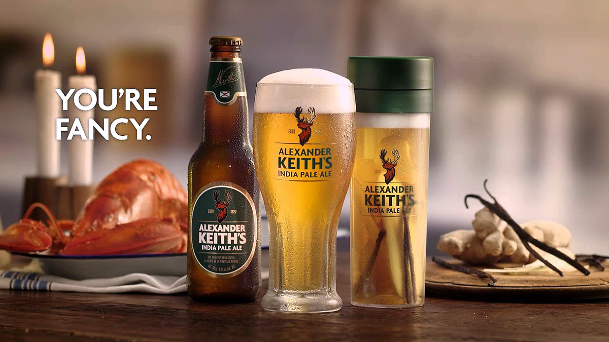
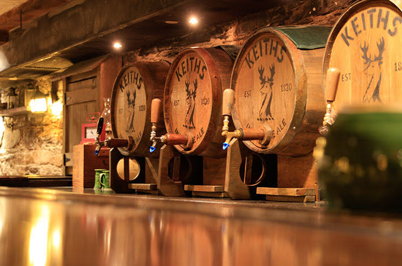
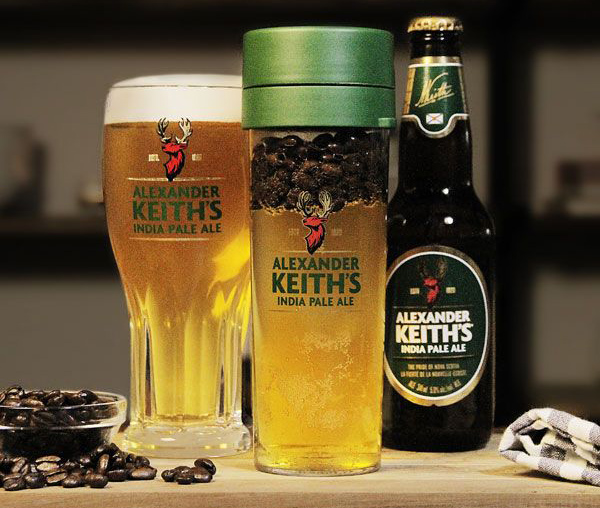

HOME
BEER
SHOP
HISTORY
CONTACT
HOME
BEER
SHOP
HISTORY
CONTACT
Body
Hero Image
Row 1
Alexander Keith's lager has been brought up in Nova Scotia since 1820. It's where the water illuminates each perspective regarding its character from emotional landscape, to unmistakable culture and obviously, uncommon brew. The coast itself is the place everything meets up: the land, the ocean, and the individuals who have called everything home for ages. Our motivation since 1820, is rooted from these astounding characteristics and the remarkable individuals met en route.
Row 2
In 1820, Alexander Keith built up his bottling works in the core of Halifax. Presently, after 199 years, we're pleased to invite you once again into our home on Lower Water Street, the Alexander Keith's Nova Scotia Brewery. We welcome you to come and visit us at our wonderfully reestablished and redesigned bottling works, and to attempt our energizing new lagers created by our brewmaster, Stefan Gagliardi. Cheers to everything brought up in Nova Scotia.
